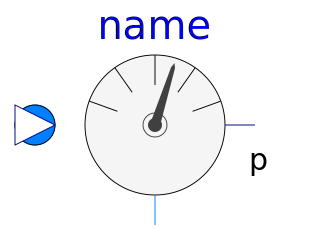
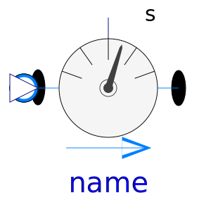
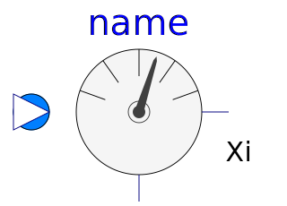
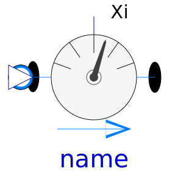

Package Sensors consists of idealized sensor components that provide variables of a medium model and/or fluid ports as output signals. These signals can be, e.g., further processed with components of the Modelica.Blocks library. Also more realistic sensor models can be built, by further processing (e.g., by attaching block Modelica.Blocks.FirstOrder to model the time constant of the sensor).
For the thermodynamic state variables temperature, specific enthalpy, specific entropy and density the fluid library provides two different types of sensors: regular one port and two port sensors.
Modelica.Fluid.Examples.Explanatory.MeasuringTemperature demonstrates the differences between one- and two-port sensor at hand of a simple example.
| Name | Description |
|---|---|
|  Pressure | Ideal pressure sensor |
| Ideal one port density sensor | |
| Ideal two port density sensor | |
| Ideal one port temperature sensor | |
| Ideal two port temperature sensor | |
| Ideal one port specific enthalpy sensor | |
| Ideal two port sensor for the specific enthalpy | |
| Ideal one port specific entropy sensor | |
|  SpecificEntropyTwoPort | Ideal two port sensor for the specific entropy |
|  MassFractions | Ideal one port mass fraction sensor |
|  MassFractionsTwoPort | Ideal two port sensor for mass fraction |
| Ideal one port trace substances sensor | |
| Ideal two port sensor for trace substance | |
| Ideal sensor for mass flow rate | |
| Ideal sensor for volume flow rate | |
| Ideal relative pressure sensor | |
| Ideal relative temperature sensor | |
| Base classes used in the Sensors package (only of interest to build new component models) |